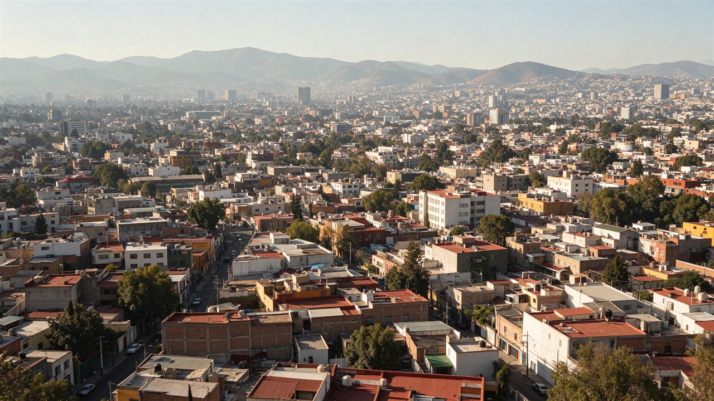

Your relocation, planned module by module
The Blueprint turns an overwhelming move into a sequenced roadmap. Work through modules in order; each one pairs a lesson, an audio summary and a template you can reuse for your own file.
Fit assessment
Does CDMX match your lifestyle, budget and timeline?
Visa & residency
Visitor vs temporary resident, documents, consulate and INM steps.
Housing
Neighborhood match, lease terms and listing red flags.
Daily setup
Utilities, internet, SIM, banking, insurance, schools.
Money & legal
Remittance, FX, records and tax-residency awareness.
First 90 days
Week-by-week settling-in plan and integration checklist.
What you can expect
6-month access
Your course hub stays open for six months from purchase; the access link and files arrive by email.
English / Chinese
Toggle the page language anytime; lessons and every template ship in both English and Chinese.
Instant digital delivery
A self-serve digital course with no shipping; access and technical issues are handled per Whop policy.

Is CDMX Right for You?
Before paperwork, test the fit: lifestyle, budget, climate and the trade-offs you should accept knowingly.
Who thrives here
- Remote workers: fast central internet, dense café and coworking scene, US-Central time zone.
- Families: international schools, green neighborhoods, lower cost than North American capitals.
- Retirees: comfortable private healthcare, walkable daily life, strong value for dollar income.
- Couples & solo: big-city culture, food and social scenes in walkable central colonias.
Trade-offs to weigh
- Altitude 2,240 m — acclimatization takes a few days.
- Traffic is heavy; most residents skip the car.
- Feb–May can be smoggy; afternoon rains May–Oct.
- Spanish language skills improve daily life substantially.
Cost benchmarks (solo, central CDMX, 2026)
| Profile | Monthly total | What it covers |
|---|---|---|
| Lean | ~$1,400 | Value colonia, home cooking, public transit |
| Comfortable | $1,500–2,600 | Roma/Condesa-level rent, regular eating out, ride apps at night |
| Indulgent | $4,500+ | Polanco-level housing, fine dining, premium services |
Fit self-check
Visa & Residency Roadmap
Understand the routes, the solvency thresholds, and the two-step consulate-then-INM process.
Visitor / tourist stamp
- Granted at the port of entry, up to 180 days; the officer decides the exact length — many visitors now receive 30–90 days.
- Onward travel and accommodation proof may be asked for.
- You cannot work for a Mexican employer on this status.
Temporary Resident Visa
- For stays over 180 days, up to 4 years.
- Applied for at a Mexican consulate or embassy abroad, before moving.
- Remote work paid by a foreign employer is generally compatible; local salary employment requires separate INM authorization.
Economic solvency (consulate-level, verify current figures)
| Route | Typical requirement | Evidence |
|---|---|---|
| Income / pension | Roughly $4,000–4,500 USD net monthly income, previous 6 months | Pay stubs / pension letter + bank statements; employment letter where applicable |
| Savings / investments | Roughly $70,000 USD average monthly balance, previous 12 months | Stamped or official bank statements, full statements month by month |
| Other qualifiers | Family ties to a resident, Mexican real estate, investment, student enrollment | Certificate / deed / enrollment proof, per consulate guidance |
The process, step by step
Prepare documents
Valid passport (6+ months, blank page), passport photo, application form, proof of legal status if applying in a third country, solvency evidence. Documents issued outside Mexico or your application country may need an apostille / legalization and an official Spanish translation.
Book the consulate appointment
Use the MiConsulado portal (citas.sre.gob.mx) and select the visas department. The consular fee is around $56 USD; it is non-refundable even if the visa is not approved.
Interview & biometrics
Attend in person: document review, consular interview (English or Spanish), photo and fingerprints. Processing can take up to ten business days; the decision is final.
Enter Mexico & collect the resident card
The visa sticker allows entry; immigration approval at the port of entry is separate. Within 30 calendar days of arrival, visit the Instituto Nacional de Migración (INM) to issue your resident card.
The Housing Hunt
Match a colonia to your persona, understand lease mechanics, and spot listings that should be walked away from.
Persona → neighborhood
- Remote worker: Roma Norte, Condesa, Juárez — café and coworking density.
- Family: Polanco, Del Valle, Coyoacán — quieter streets, services and schools nearby.
- Value long-stay: Roma Sur, Narvarte, Del Valle, Juárez — 30–40% below the prime core.
- Retiree / calm: Coyoacán, Del Valle, Condesa.
Lease basics
- Deposit commonly around one month's rent; clarify refund conditions in writing.
- Confirm what is furnished: appliances, bedding, kitchenware, internet.
- Check whose name utilities, internet and gas sit under, and how transfers work.
- Longer local leases often beat monthly Airbnb pricing; negotiate a local rate for 3–12 months.
Listing red flags
Walk away if…
- Pressure to send a deposit off-platform or in untraceable cash.
- No written contract or refusal to show ID / ownership proof.
- Photos that don't match the live tour, or repeated "just today" urgency.
- Price well below the colonia's normal range with no explanation.
Before signing
- Tour in person or via live video; check water pressure, hot water, wifi signal and locks.
- Confirm neighborhood noise at night and proximity to metro / Metrobús.
- Note meter readings and existing damage on a handover sheet.
Daily Life Setup
Utilities, connectivity, banking, insurance and schooling — the systems that turn a rental into a home.
Utilities & internet
- Electricity, water and gas bills vary by season; budget $40–80/month for utilities.
- Central colonias commonly have 200–500 Mbps fiber; confirm the included speed in the lease.
- Water delivery (garrafón) runs ~45–60 MXN per 20L jug.
SIM & banking
- Prepaid Telcel / AT&T SIM at OXXO, or an eSIM before arrival; plans around $20/month level.
- Opening a local bank account usually requires temporary/permanent residency status; international cards work for most payments.
- Keep a small local-cash reserve for markets and street vendors.
Health insurance
- Compare international travel or health plans before arrival; entry-level plans start around $40–50/month.
- Private hospitals (ABC, Ángeles, Médica Sur) are the serious-care tier; pharmacy consultorios cover minor issues.
Schools (families)
- International school tuition runs roughly $8,900–19,100/year depending on school and grade, before one-off admission fees.
- House-hunt school-first: a school on the wrong side of the city can turn two daily trips into hours of traffic.
Money, Taxes & Legal Basics
Practical money movement, FX awareness and the records you should keep from day one.
Day-to-day money
- Most shops and ride apps take international cards; cash remains essential at markets and street stalls.
- Withdraw at bank-branch or mall ATMs; decline dynamic currency conversion.
- Track the peso-dollar rate monthly; it moves and affects how far foreign income stretches.
Records to keep
- Passport, visa, migratory slip and resident card — digital and physical copies in separate places.
- Lease, utility contracts, insurance policy and employment / income proof.
- Receipts for any high-value local purchases, in case of warranty or border questions.
Your First 90 Days
A week-by-week settling-in plan that balances admin, exploration and social integration.
Week 1 · Settle the basics
SIM and cash, transport card, nearest services, safe spots for earthquakes, emergency numbers saved. Unpack and establish a routine sleep and meal rhythm at altitude.
Weeks 2–4 · Complete admin
INM resident card appointment (within 30 days), insurance registration, any local bank or telecom steps, school visits if applicable. Explore your colonia on foot and try one metro journey per week.
Months 2–3 · Integrate
Join a coworking, class or community group; build regular favorite spots; learn the neighborhoods beyond your own; review your budget against the first two months of actual spending.
Template Vault
Four reusable files accompany the course. Open them in any spreadsheet app; fill one row per document, listing or month. English and Chinese versions of each file are included.
Document Checklist
Track passport, visa, birth/marriage certificates, apostilles, translations, income proof and their status.
Relocation Timeline
Stage-by-stage tasks from six months out to arrival day, with timing and status columns.
Budget Tracker
Estimated vs actual monthly costs across rent, food, transport, utilities, insurance and misc.
Rental Comparison
Score three listings side by side on price, location, transit, furnishing, noise and lease terms.
Each template above includes both English and Chinese versions.
Frequently Asked Questions
Common questions about the course and how delivery works.